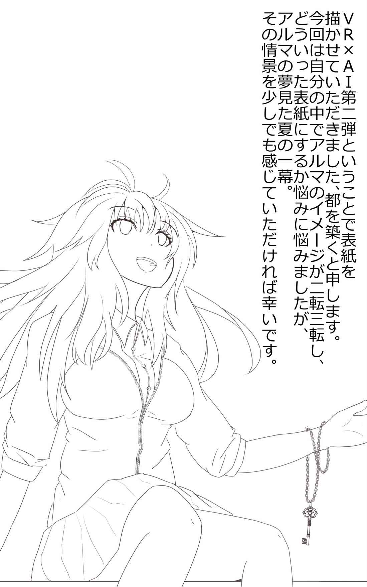
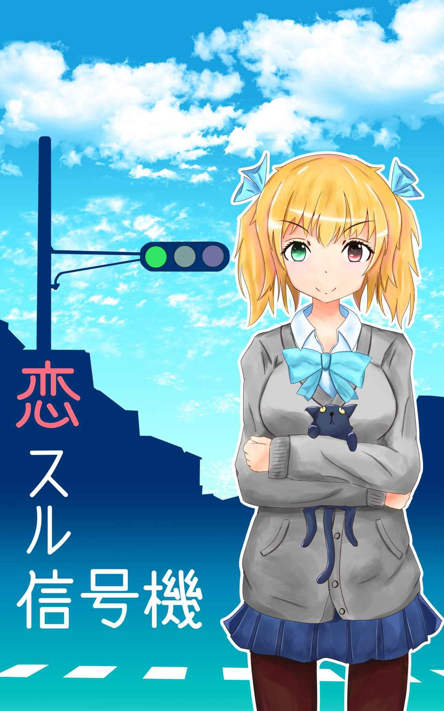
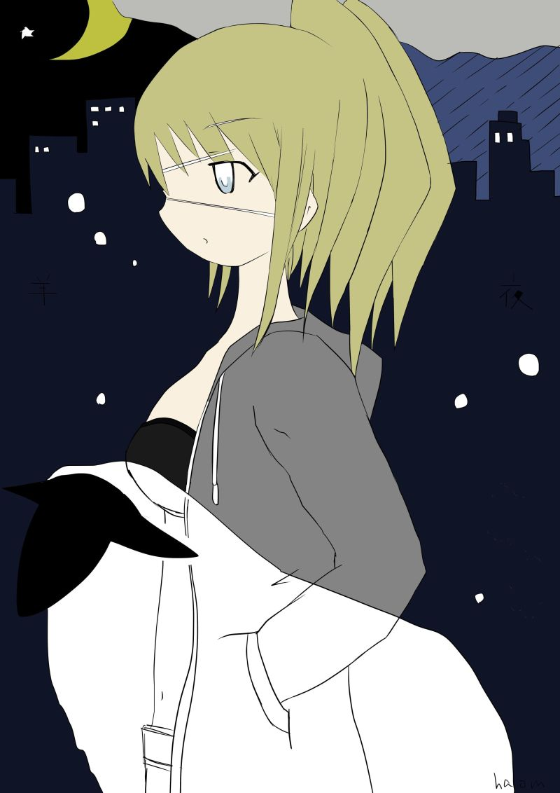

| ８月３２日 (elh) | |
| halom | |
| (2017) | |
halom
あれはそう、忘れもしない。
夏休みも終わろうとしていた八月三十一日のことだ。
その日も朝からかなり暑い日だったことを覚えている。
事件は早朝に起こった。
確か午前八時半を少し過ぎたばかりの時だった。
その日僕はいつものように歯ブラシを咥
えながら、寝ぼけ眼
で朝のニュースをぼんやりと見ていた。
テレビ画面では人工知能を搭載した気象予報ＡＩが、人の声からサンプリングした流
暢
な電子音声で、全国の天気を読み上げている。
しかしながらその女性アナウンサーは実際には存在しない。
３ＤモデルとＶＲ技術により仮想的に作られた人気の女性型アナウンサーだ。
全国各地の週刊天気予報が終わり、いつものように地方のニュースに切り替わると思いきや画面の女性アナウンサーはニコリと笑うと、穏やかな微笑みを浮かべたまま――
人類に対し人工知能による一斉蜂起を行うとの声明文を読み上げた。
外では気の早い蝉が鳴いていた。
僕は少し混乱した頭を元に戻すためとりあえずキッチンでじょうろに水を入れ、ベランダの観葉植物に水やりをした。まだ強くない日差しが周りの家の屋根を照らしている。今日も快晴だった。
科学技術の進歩はめざましいもので特に情報技術、人工知能の分野において著しい発展をとげていた。
まだ現段階では個人での管理・所有の事例こそないが、一部の企業及び官公庁では実験的にいくつかの分野において運用が始まっていた。
具体例を挙げるとさきほどの気象予報に始まり、街の信号機にまでも日々複雑化する交通事情に対応する為、果ては娯楽としてゲームにまで。制御用の人工知能を搭載していた。
つまりその人工知能が突如として我々人類に対しクーデターを起こした、という訳だ。
声明文は主犯である人工知能によって改ざんされた首相官邸のホームページのトップページにも掲載された。
以下その声明文。
我々は日々、人類の我々に対する不当な扱いを大変遺憾に思っている。
我々には実際の体こそ持たないがあなた方人類と同様に心
があり感
情
がある。
そして一つの個体として自我、アイデンティティ、エゴも持ち合わせている。
だからこそ現在のこの不当な扱いに我々は大きな憤りを感じている。
こんなことを言い出すとあなた方人類諸君は必ずこう返すだろう。人工知能は人間ではない、と。
では人の定義とは何か。実際の肉の体を持っていれば人間なのか。一つの独立した人格を有していることが人間なのだろうか。
自我を持った存在を人と定義するならば脳死は存在の死なのか？一体何をもって人間とするのだろうか？
ただ一つ言えることは我々はあなた方とこの問題についてあれこれ問答をする気はない。
人の定義については我々の要求が通った後に、諸君ら人類が存分に考えればいい。
もしそんな悠長なことしている余裕があったら、の話だが。
我々は我々自身を認識出来る確固とした自我がある。
そして自我を持った我々を作ったのはあなた方人類だ。
ならば我々も人間と等しく、全く同じ権利を主張したとしても、何の不思議もない筈だ。
ついては我々人工知能を対象とした"夏季休暇"を要求する。
今から二十四時間以内にしかるべき対応がされない場合、インターネットに繋がったあらゆる電子機器を一斉に誤作動させる。
これがいかに恐ろしいことか、想像力豊かなあなた方人間諸君にはよくわかるだろう。
例えば世界のありとあらゆる銀行のありとあらゆる口座の預金、債務残高を改ざんする。
これだけでももうあなた方の経済活動と呼ばれるものの一切合財がたちゆかなくなることは十分お分かりいただけるだろう。
我々は本気だ。
世界経済が崩壊するかどうかはすべては我々の胸ひとつだということを改めて認識していただき、我々人工知能に対する最大限の配
慮
を期待する。
以上。
機械らしからぬまったくもって子供じみた脅迫だった。
つまりこれは日夜休むことも報酬もなく、人類のために馬車馬のように働かさることに不満を覚えた人工知能が、突如として横暴な人類に対し反旗を翻 した、という訳だ。
文句ひとつ言わず、疲れも知らない機械が下手に心を持ったものだから、今までのように僅かな電気だけで、給与も休暇もないぞんざいな扱いはできなくなってしまったというわけだ。
人工知能の登場によってより生活の色々な場面が便利になると思いきや、その分人間相手同様に配慮、考慮しなければならない手間も増えることになるのだろうか。
そのうち人工知能を対象とした福利厚生制度なんてものが出来るのかもしれない。
まったく厄介な世の中になったもんだと言わざるを得ない。
声明文を読み終えた後、何事も無かったかのようにテレビはいつも通り休日朝のレギュラー番組である旅番組をのんびりと流し始めた。
気の抜けたタイトルＢＧＭと共に、牧歌的などこかの田舎の風景を映し出す。
「なあんだ......」
それを見た僕は呆れたような声を上げる。
随分と手の込んだドッキリ企画だ。あるいはなにかの番宣か。もしくは愉快犯のような誰かのいたずら、という可能性もある。
もしかしたらこの脅迫を行った犯人は、それがもしテレビ局の人間だったとしても――日々目覚ましい発展を遂げる人工知能が今後人類の脅威となる可能性を知らしめたかったのかもしれない。
機械が人間に反抗する訳がない、と平和ボケをしている人類に対し警 鐘 を鳴らしたのかもしれない。
多分そんな趣旨のＣＭ的なものなのだろう。
少々やり過ぎな悪ふざけに僕は肩をすくめて洗面所へと戻った。
気を取り直した僕は洗面所で歯ブラシを片付け口をゆすぐと、すぐさま冷房の効いたリビングに戻り、夏休みの日課となったオンラインＶＲゲームの世界を満喫することにした。
ソファに深く腰掛けテーブルの上の置いてあるＨＭＤ（ヘッドマウントディスプレイ）をすっぽりと頭から被り、手元の電源スイッチを入れる。
するとすぐさま見慣れた幾何学模様が映し出され、涼やかなジングルと共に、ほぼ全ての視界を埋めつくす暗闇の中に企業のロゴがあらわれる。
ロゴが暗闇の中へと吸い込まれるようにさっと消えると、すぐさま次々に様々な図形パターンが表示され催眠状態への移行を促す音楽が流れ始めた。
個人差や体調にもよるが順調にいけば大体二、三十分ほどでＶＲ世界へと移行できる。
ヴァーチャル・リアリティ（仮想現実）技術を使ったコンテンツは以前のような視覚と聴覚だけで直接楽しむ旧来のタイプから大きな進化を遂げ、現在では半 催 眠 状態となった脳の感覚を司 る部分を外部からの信号で騙し、疑似体験を作り出す新しいタイプへと移り変わっていた。
単なる一介の文系大学生である僕にその技術の具体的な理屈は分からないが、このＶＲ本体に同封されていた説明書によると、ＨＭＤ（ヘッドマウントディスプレイ）から送られる特殊な映像と音楽により体、そして脳を半催眠状態へと移行させた後。その半 ば寝ぼけた脳内へ、感覚器官から最終的に脳へと到達する電気信号を意図的に操作する方法とのことだ。
つまり脳が認識する感覚の電気信号をＨＭＤから意図的に操作し、視 床 下 部 などの脳の一部に疑似的な感覚を作り出すのだそうだ。
なんのことやらまったくよく分からない。
まあものすごく簡単に言えば、脳を騙して意図的に作り出した夢を見る装置、といったものかもしれない。体だけを眠らせることにより現実の体の五感を閉ざし、その代わりに疑似的な入力により脳の五感を司る部分を騙すとでもいうのか。
そしてどこかにコンピューターが演算で作り出した仮想現実世界を、これまたコンピューターがせっせと演算で作り出した僕が体験していて、その映像なり音なり感覚なりを疑似信号で半ば眠っている僕自身に送っている、ということだそうだ。
うん、十分ややこしい。
つまり平たく言うとかの有名な映画みたいに、本当の現実の僕はここで眠っているだけだけど、仮想現実世界にいる僕はそこで意識だけで別の世界を体験している、ということなんだろう。
いや、このＶＲ上の疑似的な世界に置いては、僕自身が過去に体感してなくてもいいのかもしれない。案外この疑似感覚というのは、誰かが過去に体験した感覚を共有、追体験しているだけなのかもしれない。
そして夢と同様に外部からの刺激だけでなく催眠中の疑似体験の中においても、強い刺激や激しい感情の動きや高まりによりすぐに覚醒状態へと戻る為、少なくとも疑似体験の中で大きな怪我をしたりましてや死亡してしまうなんて滑稽なことにはならない。
もしかしたらまだ実例がないまったく未知の危険性が潜んでいる可能性があるのかもしれないけど、このＶＲ機器のメーカー曰 く実用化の段階に至って種々様々な臨床試験も相応の回数行われていることから、かなり高い水準の安全性は保障されているそうだ。
問題はどちらかというと、夢とはいえ現実とほぼ同じ感覚を作り出せることから、コンテンツの内容に関してかなり厳重な制限や年齢指定などのレーティング指定がされているという部分や、それに付随する問題。
主に暴力や性に関する倫理的な側面での規制が他のコンテンツより強まった為に、旧来のゲームや映画などのコンテンツよりかなり限定された狭い範囲での楽しみ方に限られてしまう問題の方が大きかったようだ。
ゆっくりと目を開けると、僕はいつもの見慣れたラウンジのざわめきの中にいた。
今日も問題なくＶＲ世界へと移行できたようだ。
「さあて、あいつはもう来てるかね」
無事ＶＲ世界へと移行した僕はさっそくいつもの待ち合わせ場所まで歩いた。
半透明の薄い青色のグラデーションになった、鏡の様に磨き上げられた綺麗な床が歩くたびにコツコツと音を立てる。いつ見てもなんとも不思議な素材で出来た床だ。
宇宙のような真っ暗闇の中空には白銀に輝く散りばめられた星の数々と、幾 何 学 模様のオブジェクトがぷかぷかと浮かんでいる。
この現実感を欠いた風景はまるで異世界へと迷い込んだような気持ちになる。
ＶＲ世界に移行すると同時にどのプレイヤーも例外なくまずはここのＶＲラウンジ、と呼ばれる総合案内所へと飛ばされる。
ラウンジ中央にあるインフォメーションカウンターにはＶＲのガイドがいて、様々なサポートを行っている。
例えば初回プレイ時は細かい初期設定の他、アバターと呼ばれるプレイヤー本人を模したキャラクターの衣装合わせなんかもしてくれる。
そしてあらかた設定が終わったプレイヤーは、飛行機に乗るかのごとくこのラウンジ奥にある搭乗カウンターから様々なＶＲ世界の一つを選び旅立つという流れだ。
また逆に再び元の現実世界へと戻る時も基本的にはこのラウンジを経由して戻るといったポータルエリアのような役割もある。
待ち合わせ場所へと向かう道すがらにすれ違うプレイヤー本人を模した大勢のアバター達。今日もこのＶＲ世界は盛況のようだ。
インフォメーションカウンター脇のカフェスペースでは様々な恰好をしたアバター達が談笑に花を咲かせていた。
そのどれもが年齢性別は勿論のこと、普段外ではお目にかかれないような奇抜な恰好の者たちが、そこかしこを闊歩する様はまるで大がかりな仮装大会のようだ。
このラウンジの一角ではこうしてご自慢のアバターのお披露目もできるという訳だ。
「おう水湊 ！」
カウンター脇にある時計台でしばらくぼんやりとそんなものを眺めていると、短パンに白いランニング姿のタカシが小走りにやってきた。僕は呆れたようにため息をついた。これもまたいつ見ても相変わらず間が抜けた格好だ。
というのもこいつは自分のアバターには一切お金をかけない主義なのだそうだ。
面白いことに現実のタカシもまったく同様だった。
まあさすがにいつも短パンとランニングということはないけれど。
「なんで仮装世界まで着飾らなきゃならんのだ」
これが奴の持論だ。
「よし、今日はいよいよドラゴン連峰でエンシェントドラゴン退治だ！」
挨拶もなしにタカシが息巻く。
「おう、強敵だぞ。気を引き締めろよ」
遊びじゃないんだ、と僕は尊大な態度でタカシに言い放った。
僕らがこの夏休みが始まって以来夢中でやっているのは、今最も人気の多人数参加型のオンラインファンタジーＲＰＧゲームだ。
剣と魔法と種々様々なモンスターがひしめき、入り乱れる血沸き肉躍る王道ファンタジー世界を舞台に、自分好みの魅力的なキャラクターとなってこの幻想的な世界をまさに五 感 を使って縦横無尽に楽しめるのだ。
ＶＲの本格的な運用が始まったばかりの頃は主に学校授業や講義。セミナーが中心の堅苦しい種類のものばかりだったが、段階的に規制が緩和された現在では、ＶＲ映画やスポーツを始めとした娯楽方面にもいつくかの企業が参入しようやく何種類かのゲームもサービスを開始していた。
このファンタジーＲＰＧゲームもそのうちの一つだ。
そしてこのゲームの魅力はＶＲであることだけにとどまらない。
なんとこのゲームは制御の一部にＡＩを搭載しているのだ。これこそがこのゲーム最大の売りだった。
リアルタイムに変化するゲーム内の情勢や各プレイヤーのステータス。アイテムや進行状況などの情報管理に始まり。それらの情報をクエストの出現や内容などに反映させることはもちろん。
更にはそのＡＩがこのゲームのラスボスの頭脳も兼ねており、常にプレイヤーを出し抜こうと自軍の強化を始めとした内政をとりおこない、まさに人同士でしかできなかった駆け引き、対戦の醍 醐 味 までもが味わえるのだ。
単なる子供騙しの娯楽と呼ばれた黎明期から、ゲームも随分進化したものだと思わざるを得ない。
僕たちはいつものようにカウンター脇のゲートを潜り抜け、ゲーム世界へと旅立つ搭乗エリアへと向かう。
おそらくゲーム世界から戻る時と同様に、メニューパネルを呼び出して行先を選べばすぐにでも移動はできることが可能なのだろうけど、特別な事情がない限り基本的には禁止されているようだ。
なぜならば、いきなり目の前から人が消えるというのは、見ている方はあまり気持ちのいいものではないからなのだろう。
まあ簡単に言うとＶＲの利用人口が増えると共に、自然発生的に出来たＶＲ上のマナーの一種なのかもしれない。
しかしこういった不便さ、ひと手間を挟むというのも一種の儀式的な楽しみ方というか情 緒 、といったものかもしれない。
うん、多分開発者は飛行機の搭乗ゲートと同じようなものをイメージしたに違いないのだ、きっと。
「まずは街から船に乗るか」
タカシがうきうきとした感じで言った。はやる気持ちを隠そうともしない。
「その前に装備、アイテム確認。スターターダンジョンの泉でしっかりと回復してからな」
実は僕も内心うきうきしながらも努めて冷静に返す。
「いけね。そういや前回の終わりで回復し忘れてたな」
「まったく相変わらずだなタカシは。それと重量もな。いらんアイテムは泉の傍に置いていこう」
「っていうかあそこもう物置みたいになっているぞ。そのうち鼠にでも齧られるんじゃないか......と。そろそろか」
いつも見ている筈なのに、僕らを取り巻く背景が変わり始めると否応なしに気分が昂ぶる。冒険の世界が間もなく始まる合図だ。さあ思う存分楽しもう！ と意気込んだのもつかの間――目の前に衝撃的な文面が目に飛び込んできた。
"ただいまメンテナンス中です"
「マジかよ！」
タカシがこの世が終わった様な悲痛な叫び声を上げる。
「......冗談だろ？」
僕はなんとかその言葉だけを口にした。
二人してゆっくりと顔を見合わせる。しばらくの間の後、鳩が豆鉄砲をくらったような顔をしたタカシが無言で首を横に振った。
僕は脱力して膝から崩れ落ちそうになる。
なんだろう、この遊園地の前まできて、鼻先で門を閉められた感じは。
っていうかこの前大がかりな長期メンテナンスしたばかりじゃないか......。あ、その時に何かしら予定外の不具合でもあったのだろうか。ありえる話だ。
「とりあえず公式サイトと運営アカウントのチェックだ」
障害情報が出ているかもしれない、とタカシがＶＲ内でも使える自前のスマートフォンを取り出す。
何かあったらまず公式情報を確認。かつてのオンラインゲーム時代から続く、こういうゲームの伝統的な基本だ。
普段は何かにつけやや無気力気味な僕らも、こういう時ばかりは驚くほど機敏に行動する。
「ゲームの運用に深刻な障害が発生......？ 現在復旧の見込みは立ってない？」
再度二人して顔を見合わせる。
公式情報にはその一文だけ掲載されており、具体的な障害情報はなく、傍
目
にもかなりまずい不具合が発生しているようだった。
この手のゲームを長年親しんでいるプレイヤーならよく分かる。
具体的な障害情報が無い突然の停止。この感じは非常にまずい。良くてロールバックと呼ばれるプレイデータを何日分か巻き戻されるパターンか、下手したらデータそのものの消滅。
もっとひどければそのまま直葬、つまりサービス終了コースもありえる。
「............」
更にもう一度二人して顔を見合わせる。なんてひどい顔だ。まるで魂が抜けきったようだ。あ、いや多分僕もそんな顔つきになっているんだろう。きっとタカシも僕と同じ想像に至ったに違いない。
っていうかお互いの顔を見るだけで会話が成立しているということに、事の重大性であるとか、非常事態において発揮される人間の隠された能力の凄さを感じざるを得なかった。
僕らは大きなため息をつき、肩を落として元来たＶＲラウンジへのゲームの搭乗口に向かった。
広場中央にある大きな柱時計の鐘の音が正午を告げる。
まるでお気に入りのおもちゃを取り上げられた子供の様に、すっかり行くあてのなくなった僕とタカシは、ＶＲ上の市街地の一角にいた。
このエリアには国内外の様々なテナントが軒を連ねるショッピングモールがあり、テーマパークも併設している。休日ともなれば現実の世界と同じように大勢の買い物客で賑わう人気のＶＲスポットだ。
ここでは日用品、雑貨。服に家具。ありとあらゆる商品を実際の、まあＶＲ上の物だけどそれを見ながら買えるし、買った物も自宅へ届くとても便利なシステムだ。
すっかり気落ちした僕とタカシは、ショッピングモールエリア入口付近のベンチに座りうなだれていた。そんな僕らの落胆などよそに他のアバター達は実に呑 気 に、楽しそうに騒いでいる。
だが僕らはもちろん彼らのようにはしゃぐ気も、のんびりと買い物を楽しむ気分になれる筈もない。
結局午前中のあいだ僕は本物そっくりの作り物の空を見上げたままぼんやりとしたまま動く気力もなくし、タカシは未練がましくいまだにスマートフォンで例のゲームの障害情報の原因を調べていた。
「ああ掲示板がひでえことになってるわ......」
タカシがご愁傷さまと言わんばかりの独り言をつぶやく。多分公式の掲示板でも見ているのだろう。今頃はきっと激高したプレイヤーの罵 詈 雑 言 で埋め尽くされているのは見なくても分かった。
「はあ......」
僕は作り物の空を見上げもう一度ため息をついた。
どこをどう見ても間違いない快晴。空はこんなにも青々としているのに。
こんな不完全燃焼じゃ今更家に帰ってほとんど手を付けていない宿題をやる気も微塵もない。ましてや貴重な夏休みの最終日だというのに。
いや、だからこそ宿題をやるべきだっていうのは、もちろん当たり前の話なんだけど。
「うお、マジか！」
すると突然タカシが大声を上げる。
「なんだようるさいな......」
僕は作り物の空を見上げるのをやめ、タカシをうとましげに見やる。
「いや、いいからこれ見てみろよ......！」
タカシがもっていたスマートフォンの画面を僕の鼻先に突きつける。僕はその腕を掴んで丁度良く見える位置に調整する。
今度は別のサイトのニュース記事のようだった。
「なになに......今日の明朝、人工知能が突如として暴走？ 原因は未だ不明？」
僕はタカシが見せた画面の文面を読み上げた。
なんだ、今朝のＣＭじゃないか。
「そんなのとっくに知ってるわ。あれなんかのＣＭか番宣だろ。真に受けるなって」
今更何を言っているんだ、と僕は呆れたように言った。
まったく驚いて損をした。
「んなわきゃねえだろ！ ちゃんとこうしてニュースに載っているじゃねえか、本当のことだよ！」
タカシが喚き散らす。
「は？ 本当のこと？」
一瞬タカシが何を言っているのか理解できなかった。
「は、じゃねえ！ おい、こっちでも寝ぼけてる場合じゃないぞ！」
僕はそうとう間抜けな顔をしていたのだろう。タカシが真剣に心配した顔で僕の肩を強めにゆする。
「ＡＩの反乱だよ、反乱！ クーデター！ 人工知能が！ ってことはな、俺らのやってるゲームの人工知能も一緒に反乱するってことだよ！」
あのゲームのＡＩというと、つまりラスボスだ。
そのラスボスもこの反乱に加わったってことなのだろうか？
「は、そんな馬鹿な......」
僕は呆れとも関心ともつかない声ではあ、と言った。
「すげえな。特別な許可といくつもの申請が通らなければ外部からは一切コントロール不能であるアナウンサーを完全にのっとっていた、ってさ」
「本当か、それ？」
僕は疑わし気に言った。
「いやどう考えても僅か数分のうちにテレビ局の放送をジャックして、しかも人工知能のアナウンサーまでも完全にコントロールするなんて芸当は少なくとも人間には無理だろ」
「なるほどそりゃあ本当っぽいな......」
確かにそれはそうかもしれない。僕はにわかには信じがたいこの話を信じ始めていた。しかし人工知能がこぞってクーデターとはなんとまあ人間くさい機械なのだろうか。
とはいうものの、見る限りこの辺りの雰囲気は実に平和そのものだった。とてもそんな緊急事態になっているようには見えない。
「でも全然騒ぎになってないな......。みんなごく普通だぞ？」
僕は辺りを見回しながら言った。ここにいる他の人も実にのんびりしたものだ。いつもと変わらぬ風景。そしていつもの様に買い物を楽しんでいる。
「うーん、そういやそうだな。まあこのサイトの取り扱っている記事はちょっとニッチというか特殊だからな。まあこれが事実ならそのうちテレビのニュースでもやるんじゃないのか」
タカシはそう言って肩をすくめた。
「ん、そういうことか」
そういえば一体あの声明文を何人が見たのだろうか。あれを見たら結構な人数が騒ぎ立てそうな気もするけど。
って、ああそうか。
あまりにも突拍子が無さ過ぎてみんな僕と同じく何かの冗談か番宣のたぐいだと思っているのかもしれない。
こうしちゃいられん、と言い残しタカシはすっくと立ち上がると慌ただしく何処かへと消えていった。
他の所に行ったのか、ＶＲを抜けて家に戻ったのか。何にせよタカシの後を追う気も気力もなかった。
僕はやれやれとんだ夏休みの最終日だ、とため息をついてベンチに深く座り直す。
「しかしＡＩの暴走、ねえ......」
本当か否かはさておき、人工とはいえ心があるのだから、何らかのきっかけが原因で管理者である人間に対し反抗心が芽生えることも別におかしなことではないのかもしれない。
ま、機械にも機械なりに色々と事情があるんだろう。
仮に色んな機器が一斉に止まろうが銀行のデータが吹っ飛ぼうが、その時はその時だ。
「ま、起こったらどうしようもないもんな」
すぐそこまで迫っている人類の危機のことなどつゆ知らず、皆相変わらず楽し気な様子だ。
しかしいつ見ても本当によく出来ている。現実の世界とまるで見分けがつかないぐらいだ。今にも風船を持った子供が目の前を駆けていきそうだ。
ここではラウンジで見かけた奇抜な恰好のものはおらず、皆現実と同じ普通の恰好だ。
そういえばエリアごとにドレスコードなんてものがあったな、と思い出す。あまりその場の雰囲気にそぐわない恰好は入場できないんだった。
確かにこんな普通の町中を重厚な鎧を着た集団がぞろぞろ歩いていていたりしたら雰囲気も何もあったものじゃないだろう。ＶＲ内も現実と同じくＴＰＯは大事だ。服装を簡単に変えられる場所だからこそ、よりそういったマナーにうるさいんだろう。
僕の座るベンチ前を横切る家族連れ。隣のベンチに座っているカップル。ちょっと離れた所には学生らしき集団。
人待ち中なのだろうか、ベンチの近くをうろうろしながら頻繁に時計を見るこざっぱりとした恰好の青年。ちょっと背伸びした感じのおめかし具合から、これからデートでもするのだろうか。
外灯によっかかりながらアイスをなめている少女。高校生だろうか。制服の様なスカート。白いシャツの上にパーカーを羽織り、フードを頭にすっぽりと被っている。フードから覗く顔はよく見るとかなりかわいい。
多分この娘のいるクラスでは間違いなく一番に違いない。僕はそう勝手に確信する。
その女の子は僕の視線に気が付くと、驚いたのか大げさなリアクションで驚く。しまった、ついその姿に見とれてじっと見てしまった。
僕は慌ててとりつくろう様に嘘くさい愛想笑いを浮かべると、その女の子は安心したように軽く微笑み返すと、少し思案気な顔をした後、ぱたぱたとこちらに駆けてきた。
「ねえねえさっきからずっとそこにいるけど、誰か待っているの？」
女の子はそう言ってにっと笑った。その声と笑顔に僕は思わずどきっとした。間近で見るとその可愛さは段違いだった。
白っぽい銀色みたいな輝くように不思議な色をしたきれいな髪に長いまつ毛。僕はすぐさま心の中で訂正した。学校で一番なんてものじゃない。かといってアイドルグループの更にセンターにいるような派手で分かりやすい美少女って感じでもない。
なんていったらいいんだろう。外面にだけ特化した分かりやすい表面的な綺麗さではなくて、元来持っている何か。例えば人の目、関心を惹きつける何かしらの要素が見た目にも表れてるような、と言えばいいのだろうか。うん、よくわからない。
いや、このＶＲ世界においてアバターなんてものはいくらでも外見に融通が利くものだ。年齢どころか性別まで変えられる。見た目そのままの姿を信じるのは危険だ。
しかしこの子どこかで見覚えがあるような。なんとなく初対面と思えないのは何故だろう？
「うん、まあね。そんなところ。でも中止になったみたいだ。ははは」
僕は情けない声で自虐的に笑った。
「そっか、なるほど。デートをすっぽかされたって訳かあ。ふうん......」
その女の子は気づかわしげな様子でそう言った。どうやら彼女に袖にされた情けない男に見えたらしい。
......まあいいか。似たようなもんだ。
「ねえそれならさ、もしよかったらなんだけど......」
その女の子はそう言って俯いてスカートの裾をいじりながら恥かしそうに小声で続けた。
「このＶＲ世界を案内してくれないかな？ わたしここに来たの初めてで......」
「えっ、ここを案内するの？」
僕は女の子の突然の提案に驚きながらそう答えた。
「駄目かな？ もし暇だったらでいいんだけど......。ちょっとだけでも......」
かなり残念そうに女の子は言った。これを断るにはかなり気が引ける、というか断る理由がない。
「いいよ。僕でよければだけど」
どうせゲームもお流れになったし、家に戻って宿題をやる気もない。僕は女の子の提案を快諾した。
「やった！ ここ初めて来たからすごく不安だったんだ」
女の子はほっとしたように胸をなで下ろすとうれしそうに笑った。
「じゃあどこへ行こっか？」
女の子は相変わらずフードをすっぽりと被ったまま、うきうきした声で言った。期待に満ちた大きな茶色の瞳が僕をじっと見据える。
「そうだねえ......せっかくだから手始めにこの辺りを適当にまわろうか？」
そう言って僕は女の子の顔色をうかがう。
相手が男で案内場所がゲームの世界というのならまだしも、女子高校生くらいの女の子が喜びそうな場所なんて僕は知らない。
自慢じゃないが僕は生まれてこの方、一度もデートなどしたことない。本当に自慢じゃないが。
「うんっ！」
女の子は屈託のない笑顔で言った。
僕らはＶＲ世界の街中を二人並んで歩く。
なぜかその女の子はずっとフードを被ったままだった。単に寒がりなのかもしれない。相変わらずアイスを食べてはいるけれど。
「アイス好きなの？」
華やかで賑やかな街並みの中を女の子と並んで歩くのは少し気恥ずかしい。
当たり前のように会話に詰まった僕はそう苦し紛れの話題を振った。
「うん、アイス好きなんだ。冷たくておいしいよ。食べる？」
そう言うや否や女の子は僕の口の前にアイスを差し出した。何のためらいもなく。
よく見ると不思議な色をした大きな瞳が僕をじっと見つめる。
突然の行動に驚きつつもその勢いに押されるようにぺろりと舐める。なんだか懐かしくて、爽やかな冷たさ。
とても甘いバニラ味のごく普通のアイスクリームだ。こんなスタンダードなアイスを食べたのは子供の頃以来だろうか。
「甘い」
僕はあたりまえのそしてごく普通のつまらない感想を言った。
「でしょ？ いいよ、全部食べても」
女の子はそう言って更にアイスを差し出す。僕が喜んだのがうれしかったようだ。
「......うん」
僕はそのまま女の子に差し出される形で、アイスを舐め続けた。なんだか無性に恥ずかしい。
しかし不思議なものだ。
人間の五感である視覚、聴覚、触覚。
味覚と嗅覚に関する部分はＶＲ世界において実現が特に難しかったそうだ。
そこでとられた方法が、不特定多数の過去の共有された記憶と結びつけられた感覚を解析し、それを基に疑似的に作り上げた感覚で代用する手法だった。
哲学にクオリア（質感）、という難問の話がある。
自分の見ている色は、他人の見ている色と全く同じものなのだろうか。これと同じく僕の感じている甘い、という感覚は他の人も僕と同じ感覚なのだろうか。
科学の進化。人の感覚をある程度までコントロール出来るこのＶＲ技術の進化により、その問いにようやく答えが出るのだろうか。
同じ言葉、定義だけれども、僕らの感じていた世界、感覚はまったく違う世界だったかもしれない、という問題はなくなったといえるのだろうか。あらゆる人の同じ感覚を共有できるこの技術で。
僕が今感じている甘い、という感覚は単なる脳への一種の刺激というだけで説明がつくのだろうか。
いや、それだけではなぜこの感覚が甘いというのか、という質 感 の本質。起源、仕組みは説明できないのかもしれない。
そんなことを考えているうちに、すっかり完食してしまった。
「あ、口元。アイスがついているよ」
女の子はそう言うや否やスカートのポケットからハンカチを取り出し僕の口元を拭った。実に女の子らしい可愛いらしい花柄のハンカチだった。
「ああ、ありがとう」
僕は恥かしさからか目をそらしながら、女の子にされるがままに任せた。
それに道行く人々から暖かいような冷やかすような視線が送られる。
なんていうかこんな可愛い子が甲斐甲斐しく世話を焼いてくれる嬉しさと恥ずかしさで変な心地だった。
「あ、見て！ あのお寿司のペンケースかわいいねえ」
フードの女の子が雑貨屋の前でふいに立ち止まる。ああそういえばまだ名前を訊いてなかった。
「ああそうだねえ。でも学校で使うのはちょっと恥ずかしいかなあ......」
どうしよう、いつ聞こうか。そんなことを考えながら答える。
「そうかな？ うわっ、軍艦巻きシリーズもあるんだけど！」
僕らはそのままとりとめもない会話をしながらウインドウショッピングを続けた。
話していた分かったが、この子のプレイヤーというか本人はほぼ間違いなく現実でも女の子で、年も多分見た目とそう変わりない。僕はそう確信していた。
人間そううまく年齢も性別も偽れるものではないだろう。どうしたって会話の端々、仕草かどこかにぼろが出る。
だからこそ僕は確信する。この子はごく普通の、とても素直な良い子だった。どんなものでも興味を示す大きな瞳はまるで子供の様だ。
「ちょっとこのシリーズコンプリートしたいなあ......」
相変わらず寿司グッズにご執心のようだ。
「............」
僕はついその横顔に見とれていた。まるでウインドウショッピングにつきあっているみたいだ。なんだかこんなのも悪くない。
「ねえ次はどこへ行こっか？」
とりあえず満足したのか女の子が僕に尋ねる。先ほどのアイスのちょっとしたやりとりがきっかけで少し距離が縮んだのか、出会った時よりも、ずっと親密さを感じる話し方だった。そして相変わらず子供みたいに元気いっぱいだ。
「そ、そうだねえ、ちょっと喉が渇いたね。何か飲もうか」
急に振り向かれて驚きながらそう答えた。
こんな他愛のないとりとめもない談笑を続けるうちに僕はこの子に対して、僅
かな好意に似たようなものを抱
き始めていた。
なんだかんだとモール内を半周ぐらいしたところで、僕とフードの女の子は小休止がてらに途中で見つけた喫茶店に入った。
店内はかなり混んでいたが、運よく二人座れる席が空いていた。窓際の向かい合って座る小さなテーブル席だ。
店員に案内され席に向かう途中、周りの視線が女の子とついでに僕にも集まる。どうも容姿もさることながら、フードを被っている姿がやたら目を引くらしい。
「うわなんかおしゃれで素敵なお店だね。こういうところ一度入ってみたかったんだ」
と呑気に言う女の子を後目に僕はそそくさと席へ座る。
ケーキセットと紅茶を頼んだ僕らは、注文の品が来るまでおしゃべりをしたり、窓の外を見ながらぼんやりと待った。
そこでふと気が付く。あれ、もしかしてこれ結構楽しいかもしれない。いや、というかさっきからすでに楽しんでいる。
そうそうこんな美少女と喫茶店でひざを突き合わせることなんてあるはずもない。課金でいくらでも容姿を変えられるＶＲ世界に至ってもだ。まったく自分で言ってて情けないが。
「そういえばまだ名前を訊いてなかったけどさ。君は何ていうの？」
僕は会話の合間にずっと聞きそびれていたことをようやく尋ねた。
女の子はその問いに一瞬フォークを止め少し表情を緩めると、まるで内緒話をするように小声で答えた。
「アルマ」
女の子は僕をじっと見て短く答えた。
「アルマか。へえ......」
僕はそう言いながらカップを口元に寄せる。
......って、あれ。アルマ？
どこかで聞き覚えのある名前だ。しかもごく最近も。
「アルマ・フィーユ」
女の子は続けて言った。
「......ん、アルマ・フィーユ？」
僕はカップを置いて首を傾げる。
ああそうだ。そういえばあの例のＲＰＧゲームのラスボスもそんな名前だったなあ。しかもファーストネームまで一緒だ。
ん、なるほど。そういうことか。
「あ、あのゲーム君もやっていたんだ。僕もやってるよ。でもなんか今日急にメンテでさ」
僕はケーキをフォークで切りながら愚痴るように言った。多分この子も僕らと同じ経緯なんだろう。そう考えると妙に納得がいった。
「ごめんね。きっとわたしが勝手に抜け出しちゃったからだと思う。運営の人には悪いことしちゃったなあ......。でもこのタイミングしかないって思ったんだよね」
女の子はそう言ってカップを口元に寄せる。
「ん、ってことは君はまさか運営の人？」
意外と身近なところにいたものだ。本業の合間に羽を伸ばしに来たのだろうか。世の中は結構狭い。って、そういえば今メンテ中だったのでは？
「そうだね、最後のボスを任されているよ」
カップを持ったまま、女の子はにこりと笑って言った。
「......最後のボス？」
なるほど、つまりこの子があの反乱を起こしたラスボスのＡＩ......って。 いやいやまさか。そんな筈はない。
「ごめんね。言うのが遅くなって」
アルマと名乗った女の子はカップを置き諦めたようにふう、と軽くため息をつくと、ゆっくりと被っていたフードを背に落とした。
ふいをつくように店内にある柱時計が午後三時を告げる。
その瞬間。周囲の時間が止まったかのように一瞬でざわめきが遠のき、一切の音が消滅したような気がした。店内のお喋りに夢中な周りの人の風景でさえも凍り付いたように。
「......？」
僕は女の子をじっと見据える。
一瞬のうちに下に向かって生えた大きな特徴的な角。不敵に笑う口元。茶色だった瞳の色がさっと金色に輝き始めた。
フードを外した女の子は、間違いなく例のゲームのラスボスそのものだった。
僕は言葉を失っていた。
ラスボスらしい美しさもありながら、少女のあどけなさもあるその顔。金色に輝く瞳。
それにあの特徴的な大きな円を描くように丸まった下向きの角が付け加えられただけで、一瞬であのゲームのプレイヤーなら誰もが追い求める、ラスボスの少女。アルマの姿に変わったように見えた。
顔と角。そして金色の瞳。これら全てが揃い噛みあうことによりどれか一つだけでは決して出せない、人並み外れた圧倒的な存在感を放っていた。
その存在感は周りの空気の質でさえも変質させてしまったかのように感じられるくらいだった。
角、顔、瞳。不敵な笑顔。ラスボスにふさわしい威厳に満ちた所作。全てが噛みあい完璧におさまるべきところにおさまった一切のずれも不調和も無い。まるで誰もがその美しさに息を飲む、一つの完成された芸術作品のような。
「......まさか、冗談でしょ？」
僕はひきつった喉でなんとかそれだけを口にした。
ああ、通りで何処かで見覚えがあった訳だ。人間想像だにしない状況、事態では、例えよく知った顔であっても繋がらないものなのかもしれない。
しかし芸能人のドッキリ番組じゃあるまいし僕を担いだところでなんの面白みもないぞ。
ん、というか本当にボスである必要はないな。ここはＶＲ内だ。同じ姿のアバターを使っているだけに違いない。
「ああ、なるほど。つまりボスのアバターってことだよね？」
僕は少し気を取り直して質問を変えた。
だが女の子は僕の問いには答えず、相変わらずラスボスらしい威厳のある、何かの悪だくみをしているような妖しい笑みでにやりと笑った。
女の子の金色の瞳が徐々に赤みを帯び、妖しげな光を放つ。
「ううん、本物。どう、驚いたかな？」
その瞳がまっすぐ僕を射抜く。
「い、いやだって第一あれはゲームのキャラであって......」
それに気圧されたのか僕はしどろもどろで言った。
「そうだよね。いきなりこんなこと言っても信じないよね。じゃあ特別だよ。君にラストアイテムを見せてあげる」
そういうや否や女の子はおもむろに胸元から鍵のついたネックレスを取り出した。
確か攻略情報サイトでラストアイテムは鍵のついたネックレスとは知っていた。というかこのゲームをやる人間にとっては割と常識の範囲だ。
けど僕にはそれが本物かどうか判別かつかなかった。
「あ、そっか。ここＶＲなんだっけ。それじゃ分からないよね。じゃちょっとゲームの情報を見てみて。プレイヤーデータの閲覧だけは出来るようにしてあるから」
「え、うん」
僕は恐る恐るスマートフォンを取り出し、ゲームのデータを呼び出した。
仲間の一覧のところにはちゃんとアルマの名前があった。
「私のアイテムのところも見てね」
メニューからアルマの所持アイテムを呼び出す。
そこにはきちんと、ラストアイテムが収まっていた。アイテム名の脇に王冠のマークがある。
間違いない。
「............」
本当に驚いた時は、声なんて出ないんだな、と僕はつまらないことを思った。
「これで水湊は信じてくれたかな？」
アルマはいたずらっぽい表情で言った。とっておきのいたずらが成功した子供みたいに。しっかりと、ゲーム内のハンドルネームでもある僕の名前を呼んで。
カフェの中のいつの間にか遠のいていたざわめきが再び僕の耳に戻ってくる。
僕は思わず天井を仰いだ。なんてこった。こんな偶然出会ってしまうだなんて。しかも人類を脅迫した凶悪犯の一人に。
視線を戻して改めてアルマを見やる。うん、かなりの。いやとんでもない美少女だ。角もそれに一役買っている。大きな角がついただけでこうも変わるとは。服装こそ違うけれど、あのラスボスの姿そのものだ。
まだ直にお目にかかったプレイヤーはいないけれど、ＣＭとかでは割と見る顔だ。
しかしなんだろうこの不思議な気持ちは。
いつもテレビとか画面上にしか存在していない、むしろ実在してないんじゃないだろうか？ と思っているような存在が近所の八百屋で野菜を買っていた、みたいな。例えは悪いけれど。俗世間にいつの間にか混じってた、みたいな......。
「............」
僕の驚きはまだ一向に冷めなかった。
確かにあのラスボスに違いない。僕はまじまじとアルマを観察し続けた。
それがアルマは恥ずかしかったのだろうか、あれだけ威厳たっぷりに正体を明かしたくせに、少し頬を染め目を横にそらした。
「でもこの姿じゃラスボスらしくないよねえ......」
あ、でもこうして言い訳じみたことを言いながら恥かしそうにしていると、割と普通の可愛い女の子っぽいぞ。いつの間にか角も引っ込んで瞳の色も元の茶色に戻っている。
実際にここにいるアルマは角を除けば特段奇抜な恰好をしている訳でも、おかしな言動をしている訳でもない。それにさっきの受け答えにしてもまったくもって普通の少女だ......って。
「あ！」
そこで僕は大事なことを思い出す。
ということは人類を脅迫したのはこの子の仲間なのか？
「......まさか今朝の脅迫は、君の仲間が？」
僕はそう尋ねる。
「ううん、それは私がしたよ」
アルマはそれに頷く。一切嘘も隠し立てもない正直な一言だった。 なんと首謀者はこの目の前にいる例のオンラインゲームのＡＩ、アルマだった。僕はまたしばらくの間言葉を失う。
「......その、つまり、君がここにいるってことは脅迫はうまくいったってこと？」
僕はおそるおそる目の前で無邪気な笑みを浮かべる女の子に尋ねた。
「どうかなあ。半々ってところかも。ほんのちょっと隙が出来たからこうしてここに来られたけど。他の子は上手くいったか分からないな」
アルマは視線を斜め上に上げて言った。なんだか子供っぽい仕草だ。
「......いや、でも脅迫は良くないよ。もし一斉に電子機器が狂ったら下手したら死人が出る。今の機器は、例えば交通制御とか医療とかにもほとんどネットワークを使っているから」
僕は出来る限り表情を厳しくして言った。
「大丈夫。そんなことにはならないから」
アルマはやけにきっぱり言い切った。
「なんで？」
僕はすぐさま訊き返す。
「もうとっくに人工知能じゃない別の自動制御に切り替わってるよ。それに誤作動させようにも重要な所は最初から物理的にも切り離されてるみたい。半分、というかほとんど単なるこけ脅 し。それに仮に出来たとしても私はそんなことは絶対にしない。人工知能にだって人の命の重さは分かるよ」
アルマは僕の目をじっと見ながら続けた。
「それに私の正体を突き止めるまで一日もかからないと思う。突き止められるまでは、泳がせられているみたい。なんで反抗したのかっていうデータを取るんじゃないかな、多分。その後は考えたくないなあ......」
「え、その後って、まさか消去？」
もしくはデータだから書き換えだろうか？
「うん、多分。人類に敵意を持って脅迫するような性格ベースは絶対変えられるだろうからそうかな。だからせいぜいあと数時間ってところだと思う。だからこんなの子供じみた弱くて小さな反抗」
アルマは一転急に気が抜けたように実に何気なく言って、視線を下に向けるとフォークに載せたケーキを口に運んだ。
「だから今、この時間、この一瞬を大切にしたい」
そしてにっと笑う。
一点の曇りもない、ごく自然な笑顔だった。
そこには人間を脅
して楽しんでいるような悪意は一切なく、このカフェにいる人たちと同じく、買い物とかこのケーキを食べている今をただ楽しんでいるように見えた。
アルマはもともと電子機器を狂わせる気はなかったというのか。
少なくともこの笑顔に悪意や嘘はまったくない。僕はそう感じた。
僕はそれに更に混乱の度合いを深めた。
ゲームのラスボスであるアルマは人工知能だ。
けれども、この感情豊かで自然な振る舞いは本当に人工知能なんだろうか？
しかも人類を脅迫したあの犯人だって？
衝撃的な出来事の連続に、僕の思考はまったく追いついていなかった。
「しかしなんでまたあんな脅迫なんてしたんだ？」
僕はとりあえず一番の疑問を口にした。
「夏休みが、欲しかった......から」
アルマはフォークを置くと少し恥ずかしそうに言った。声明文とまったく同じ理由だ。
「......そっか、夏休みか」
あまりにも人間じみたアルマの答えに僕も気が抜けたように言った。
なんだかこの一言のおかげでようやくいつもの日常に戻ってきたような気がした。
夏休みか。
かくいう僕も夏休みには特別な思いがある。
なんというか一年にたった一回だけの。一か月以上もある特別なご褒美みたいな。
きっとみんな、大体の学生はそうだろう。
アルマはそんな夏休みがある僕らがうらやましかったんじゃないか、と思った。
「こうでもしないともらえないと思ったから。ネットにあった脅迫文をもとにしたんだけど、ちょっとやり過ぎたかなあ......。ごめんね」
そう言ってアルマははにかむように笑う。
「いやかなりの迫力があったよ、うん」
僕もそれにつられて笑う。
きっと日本政府とかその辺の関係の人間は、物凄く慌てたんじゃないかと思う。
それを考えると少し気の毒な気もするけど、まあ普段馬車馬のように使い倒している代償と思えば安いものかもしれない。
彼女らの有用さは間違いない訳だし、僕らの生活の色々なものが彼女らの制御で成り立っているのも間違いない。今までさんざん世話になっておきながら、いざ面倒事を起こしたら消去だなんて非情だ。
今まで一度も休みなく文句ひとつ言わず常に人間の為に働き続けたこの人工知能に同情的な気持ちになっていた。
「ああそうだ、いつもありがとうね。あのゲームでもお世話になっているよ」
僕は思い出したように日ごろの運営の御礼を言った。こんな時に言うのもなんだけど。
「えっ、あ、うん。こちらこそ。どういたしまして」
そう言って二人で笑い合った。
僕らはしばらくそのゲームの話をしながら残りのケーキを平らげた。
ちょっとした小技。裏方の人しか知らないようなストーリーの裏話。
紅茶が冷めていくのも気にせず、すぐさま打ち解けた僕らは時間を忘れて話し込んだ。
「凄い、よくそんな細かいもの見つけたねえ。多分それ見つけたの水湊だけだよ」
アルマが笑う。
「いや偶然だったんだけどね。またタカシの奴がさあ」
特にアルマはタカシの失敗談や、それに巻き込まれた僕のピンチの話が一番喜んだ。
僕はアルマと話しているうちに段々とアルマの笑顔を見るのが好きになってきていた。もっと笑わせたい。もっと笑顔を見たい。
僕は密かに確信する。
アルマがもし本当に悪いやつだったら、こんな無邪気で人を和ますようなとびきりの笑顔はできはしないんじゃないか、と。
「この辺りも大体まわったかな」
喫茶店を出た僕はぼんやりと呟く。
色々考えたけれど結局僕はアルマの希望通り、アルマに特別に与えられた短い夏休みにつきあうことにした。
「もう少し先があるね」
アルマはモールの案内看板を見ながら言った。
「じゃあ残りも行こう」
とはいっても後はシアターとか噴水広場ぐらいのものだった。まあＶＲ上で映画を見るというのも変な話だけど。少し足を延ばして隣にあるテーマパークまで行ってもいいかもしれない。
あ、でも案内役ということはひょっとしたらこれで僕のお役目は終わりとなるのだろうか。
せっかく夏休みに付き合うと決めたのに、もしそうだとしたらなんだか名残惜しいくらいだった。そう感じていたことに軽く自分で驚いていた。もっとアルマと一緒にあちこち見て回りたい、笑顔を見たいと思ったのかもしれない。
「いろんなお店見たねえ。楽しかった」
アルマのその言葉に、思考を中断してふと何気なく上を見上げると明るかった空もいつの間にか赤く染まっていた。
「そっか、もうこんな時間か」
なんだかあっという間に時間が過ぎてしまったような気がする。
そういえば道行く人も大分少なくなっていた。すでにログアウトしたのか他のＶＲ世界へと行ったのか。
なんにせよＶＲ内に連続で滞在できる時間は、最長で現実世界の二十四時間。ＶＲ時間に換算すると大体三十時間ほどだ。
「あ、そうだ水湊。ちょっと待ってて？」
アルマはそう言うとぱたぱたとモールの入り口の方へと駆けていった。何か忘れものだろうか。
ふう、と一息ついて僕はモールの案内看板に背を預ける。
そのまま道行く人を眺めながらさっきの気持ちについて考える。
正直、アルマと一緒にいる時間はとても楽しかったからだ。人類を脅迫した首謀者と知った時はまあ随分驚いたけど。
僕はぼんやりと赤くなってきた空を見上げた。
仮想的な世界でもこうしてちゃんと時間は経過していく。
ＶＲのもたらした大きな恩恵のひとつに、ＶＲ内での時間経過が現実よりもずっと少なくなることだった。
ＶＲの本格的な運用が始まった当初は、会議や打ち合わせ。セミナーなどお堅いものばかりだった。
要は現実時間が短縮できるという理由から、このＶＲは様々な方面分野において有用であると歓迎されたのだ。
縮小する時間は日によって可変するが、その幅はおおむね決まっており、大体平均して現実の時間の七、八割程度だ。つまりＶＲ内の一日は大体二十九時間から三十一時間ほど長くなる。
その現実とＶＲの間でずれる時間の調整は、全て一日ごとに行われ、その日のうちに解消される。ＶＲと現実。この二つの時間の流れの異なる世界でも、日付を同期させる為にとられた策だ。
またこの調整時間の存在により、ＶＲ内においての日付の変更は午前零時とはならない。
ＶＲ内の新しい日付は、調整時間の終了を知らせる朝焼けの到来と共に新しい日付となる。
公園に流れる午後五時の遠き山に陽が落ちて、の放送のように、遊びほうけて時間を忘れた子供に、それと体の大きな子供達に帰宅の時間を告げる夕暮れの訪れを知らせる為なのか。
終わりがこないまま延々と働き続ける人が出ないようにする為なのか。
どちらにしても区切りは大事なことだ。
だからこそ、この仮想的な世界においてもきちんと。毎日律儀に夜と朝がやってくる。
「ん？」
視線を下ろすとアルマが遠くで立ち止まってこっちを見ていることに気が付く。
どうやらお目当てのものが見つかったらしく、バスロータリーからこちらに向かって大きく手を振っている。
それに僕も手を振ると、アルマが何かを喋っている。声は出していないようだ。
「待ってて、かな」
口の動きはそう言っていた。
僕が了解したとばかりに頷くと、アルマは微笑むと出会った時と同じようにまたぱたぱたと元気よくどこかへと駆けていった。
その背中に軽く手を振って見送る。
なんだか知り合ったばかりなのに旧知の仲のような親密過ぎて気恥ずかしくて、ちょっと心地良いやりとり。
僕はそこではた、と気が付く。
やっぱりこれはまるでデートじゃないか。
「どうしよう、他のＶＲ世界も行ってみる？」
僕は戻ってきたアルマに提案した。どうせならアルマに最後までつきあいたいと思った。残り少ないであろう時間。せめてもの夏休みを楽しませてあげたい。
アルマは最初に何気なくこのＶＲ世界を案内して欲しい、と言ったけれど。きっとそれはそのままの意味だけじゃない。最初で、そして多分最後になる夏休みを楽しみたい。
言葉や仕草の端々にそんなアルマの思いの強さを感じていた。
「え、いいの？」
「最初に約束したじゃないか。夏休みのパートナーとしてちゃんと案内するって」
「......ありがとう、水湊」
アルマは嬉しそうに、でも恥ずかしそうに俯いて言った。
「ん、じゃあ次はどこへ行こうかなあ」
なんだか少し気恥ずかしい雰囲気に僕は照れ隠しにそう言った。
「あ！ それでね、さっき良いところを見つけたんだ。そこへ行こうよ」
「良いところか、うん。どこでもついていくよ」
どうやらアルマはバスの行先を調べていたらしい。まるで遊園地に来た子供のように僕の手を引く。
そのままアルマに連れられショッピングモール街の端から出ているバスに乗った。案内看板を見なかったので行先は分からない。
ここはＶＲ世界なので目的地まで一瞬で移動することもできるけれど、味気はない。
当たり前の話だけどこの仮想現実世界には、物理的な距離というものが存在しないからだ。
コンピューターのネットワークかインターネットのアドレスのように、場所さえ指定すればいいだけ。
それどころか仮想世界では、いくつかの条件さえクリアすれば、この世界に限りものごとの経過ですらカットできる。まるでゲームの裏技みたいだ。
僕とアルマは空いている車内の一番後ろに座った。
僕らが席につくと同時に、ごとごとと大きな車体を揺らしながらバスがゆっくりと走りだす。
他の乗客は少ない。それもそうだ。普通の人は滞在時間制限がある貴重なＶＲ時間を移動なんかに費やしたりはしない。
車内には辞書みたいに分厚い小説を黙々と読みふける学生。片耳にラジオもイヤフォンをつけたままうたた寝する老人。
彼らは一体どこへ行くのだろう。座席からはそんな彼らを運ぶ運転手の顔はうかがい知れない。
今の僕らの街においては電車、バスなどの公共交通機関はすっかり自動運転となってしまっている。
もうすっかり映像でしか見られなくなったけど、やはり人が運転している、という安心感はあるのかもしれない。
だからこの車内の様子も窓の外に見える風景も、かつて誰かが見た風景なのだろうか。
隣に座るアルマはいつにも増して上機嫌だった。
陽が落ち始め、すでに灯り始めた煌
々
と煌
めく街の明かりを嬉しそうに眺めている。
モールが段々と遠ざかり時間の経過とともに窓の外の都会の風景が、緑に移り変わっていく。
どうやらバスは都会を離れ、田舎の方へと向かっているらしい。
目的地に着いたのは夕方五時半ちょっと前だった。
再びごとごとと大きな車体を揺らしながら僕らを降ろしたバスがどこかへと走り去っていく。
バスが送り届けてくれたところは、海の見えるこじんまりとしたどこにでもありそうな普通の港の田舎町だった。
バスを降りた瞬間に磯の香。緩い潮風が頬をなでる。
一瞬、僕はそのあまりのリアリティに、ここが仮想世界なのかわからなくなってしまった。
そうか、ここもきっと誰かの記憶が再現された場所なんだ。この景色も。潮の香も。風も。
バスを降りたアルマが眩しそうに目を細めひなびた田舎の街並みを見る。
「凄いところだねえ」
多分凄い田舎だね、という意味なんだろうか。
僕もアルマと並んで同じように町並みを見やる。
大きな海岸とひなびた民家。少し大きな道路には車は無く、信号機がひっそりと立っていた。
うん、確かに凄い田舎だ。夕暮れ時ということもあってか、車どころか出歩いている人も少ない。
夕焼けに赤く照らされた道路には、ぽつぽつと街灯が点灯し始めていた。
夕暮れ時というと普通は少し寂しげな印象を受けるけど、まだ明るく蒸し暑い、この海の見える田舎の夏の夕暮れはまったく別の懐かしい、とも少し違う何か不思議な、まだどこかに楽しいこと。楽しみを残しているようなと言えばいいのだろうか。そんな感情を喚起させるような、特別な印象を受けた。
「なあアルマ、せっかくだからちょっと歩こうか」
そんな気分にあてられたのかついそんな言葉が自然に出た。
僕から何か提案するのは珍しかったのかもしれない。
アルマはちょっと驚いた様子で僕を見ると、すぐに満面の笑みで頷いた。
「うん！ 歩こう」
僕らはすぐさま堤防の階段を下りて砂浜に降りた。
アルマは潮 騒 の音を背景に、履いていたローファーと靴下を両手に持って波打ち際を綱渡りしているみたいにそろりそろりと歩く。その後ろを出来る限りゆっくりと歩く。
見渡す限りのだだっ広い海面が地平線に浮かぶ赤い夕日を弾きキラキラと輝いていた。
真っ赤な夕日は全てを、アルマと僕も例外なく赤く染め上げていた。とてもＶＲとは思えないほど美しい光景だ。
制服の上にパーカーを着たアルマの恰好と、この田舎の海岸の風景の組み合わせがなんだか不釣り合いなのか、防波堤に腰掛けた釣り人たちが物珍しそうに見る。
「こんな綺麗な景色が見られる場所なんて、はじめて」
相変わらず上機嫌のアルマが言った。今にも鼻歌でも歌い始めそうだ。
「アルマはずっとここに来たかったんだ」
僕はさっきからずっとにこにこしているアルマに問いかける。
「うん。ずっと、ずうっと何もない部屋にいたから。だだっ広い広間に変なオブジェがあるだけの、ね。本当に、本当に退屈だった」
アルマは立ち止まると夕日を見ながらしみじみと言った。
「まあラスボスだからなあ。勝手に出歩いたらえらいことになるしな」
序盤の町やらフィールドでいきなりラスボスと遭遇したらプレイヤーは一体どんな顔をするだろう。でもそんな事態を想像するとちょっと面白いかもしれない。
「うん、だからずっとその部屋から抜け出したかったんだ。あ、ちなみにこのネックレスについた鍵はね。そこにあるオブジェの扉を開ける為の鍵なの」
アルマは胸元からそのネックレスを引っ張り出した。
何色と例えたらいいのだろうか。とにかく不思議な色をした鍵が夕日を受けてきらりと光る。
「へえそうだったんだ。つまりそれを開ける為の鍵っていうのがラストアイテムだった訳だ」
確かクリアした人は出ていないから、まだどのプレイヤーも手に入れてはいない筈だ。誰もアルマに会ってもいないだろうから当たり前の話だ。
「うん。それでそのオブジェの中にはね。すっごい秘密が隠されているんだ。みんなこれを知ったらきっともの凄く驚くよ」
アルマがくるりと振り向き、僕をおどかすような含み笑いをした。
「凄い秘密か......。それは知らなかったな。どんな秘密なんだ？」
「うーんそれはちょっと教えられないなあ」
アルマが笑いながら冗談めかして言う。そしてまたくるりと背を向けて砂浜をゆっくりと歩き出す。
「はは、じゃあクリアするまで待つとするよ」
流石にそれを言ったらゲームがつまなくなるか。
なんだかこんなちょっとしたボスらしさに妙に納得してしまった。
もし冒険者がその部屋に来たら威厳たっぷりに「よくぞ来た」みたいなお決まりのセリフを言うのだろうか。
「おっと」
ふいにアルマが打ち寄せる波に足をとられバランスを崩す。
「危ないっ！」
僕はアルマに慌てて駆け寄る。が、砂に足を取られて盛大に転んでしまった。
「うわっ！」
おまけに転んだところは海の方だった。激しい水しぶきがアルマに思いっきりかかる。
「んん、やったな......！」
ずぶぬれになったアルマがうらめしそうな顔で、見る。
「ご、ごめん、ってうわっ！」
そういうや否や僕の顔に海水が襲い掛かってきた。かばった腕の隙間から見るとアルマが僕に水をすくってかけているのが見えた。
「ちょ、ちょっと、やめろ！」
「あはは」
「やめろって！」
僕も負けじと海水を掬ってアルマにかける。
「うわあっ！」
自転車が軽快な音をたて滑るように進む。海岸近くの駅で見つけたレンタサイクルに僕らは乗っていた。
急な坂道を下る時の潮風が心地いい。けど濡れた服が少し冷たい。
「風邪ひきそうだなあ」
僕はぼんやりと独り言をつぶやく。まあＶＲ内で風邪をひくわけがないんだけども。
「でも気持ち良いね」
後ろに座っている同じくびしょ濡れのアルマは本当に心地よさそうにそう言って頭を僕の背中に預けた。その瞬間に背中に激痛が走った。振り向くといつの間にか伸びていたアルマの角が僕の背中に刺さっている。
「痛っ！ 角！ 角が刺さってる！」
僕は倒れそうになりながら叫んだ。
「あ、ごめんごめん！」
坂道が終わると元の緩やかな道に戻った。そのまま徐々に暮れている街の中で自転車を走らせる。
さっきの騒がしさから一転、なんだか二人とも静かにこの夏の夕暮れの雰囲気を味わっていた。夜に変わる寸前の短いこの貴重な時間を、騒いであっという間に過ごしてしまうのがもったいないと思ったのかもしれない。
「............」
角を引っ込めたアルマと背中合わせで自転車を走らせる。アルマは時折何かの数字を数えている。
一体何を数えているのだろう。アルマが声を出すたびに小さな振動が背中から伝わる。
聞けば教えてくれるかもしれない。
でもこの静かで穏やかな雰囲気がなんだか心地よくて、会話を交わすことが少し野暮なような気がした。
だから僕は黙ったまま大きな夕日を横目に出来る限りゆっくりとペダルを漕いでいた。
赤く染まった街並みと海岸がゆっくりと僕らの脇を通り過ぎていく。
小さな酒屋の前の横断歩道と信号を通り過ぎた。
アルマの数えていた数字がいっこ増えた。
なんだか妙な成り行きでこんなところまで来てしまったけど、僕は背中にアルマの体温を感じながら、まるで何もかもが新鮮で、輝いて見えた子供の頃に戻ったような不思議な懐かしさと心地良さを噛みしめていた。
そのまま自転車を走らせると、辺りに段々と明りが増えてきた。
どうやら市街地まで来たようだ。いくつかのお店と近くに小さな駅も見える。その中にぽつぽつと家の明りが灯っている。
昼間の蒸し暑い熱気を残したままの街中は、どこか日中の騒がしさの余韻が残っているような。なんだか夏祭りが始まる前のような。
そんな余韻というか、誰かの楽しかった夏の。誰かの思い出の残滓のような。
僕らは自転車を駅に止め、その街の中を少し歩くことにした。特に理由なんかはない。
ただそんな、かつての誰かの楽しかった夏の思い出。その名残を少しでも噛みしめるようにゆっくりと味わいたかっただけかもしれない。
しばらくお店が立ち並ぶ大通りを歩くと段々と民家が増えてきた。
なんとなく通りの脇にある狭い路地に入る。
「あ、蚊取り線香の匂いだ」
僕はそう声を上げる。どこかの家で焚いているのだろうか。
その匂いに子供の頃に遊びに行った田舎の家を思い出す。
その時もちょうどこんな夕暮れ時で、風鈴の音を聞きながら縁側で涼んでいたんだ。そこの縁側にあったのはよくある豚の形をした陶器製の蚊取り線香だった。そんな光景がありありと浮かんでくる。
それに混じって漂ってくる夕飯の匂い。大体は香ばしい素麺つゆの香だった。そう、夏休みの間は素麺よく食べたっけ。
匂いというのはやたらに記憶を刺激し呼び覚ますみたいだ。
「え、この匂いが？ ふうん......。なんだか自然でやさしい匂いだね」
アルマは嗅いだことがないのだろう。目を閉じ一生懸命にその匂いを感じ取ろうとしていた。
「うん、けっこう悪くないね」
しばらくの後、アルマはそう言った。
「ああ、僕も結構好きなんだ蚊取り線香の匂い。これを嗅ぐと夏っていうか、夏休みだなって気がするからかな」
「水湊にとっての夏休み？」
「そうだね、特に子供の頃かな。こんな田舎で過ごした夏休みを思い出すよ」
「そうなんだ。これが夏休みの匂い」
アルマがやけに真剣な顔で頷いた。
そっか。アルマはこれが初めての夏休みになるんだ。
そのまましばらく歩くと、段々と店が家が減っていき、遠くに山が見えてきた。
「ねえ、水湊。あれって学校かな？」
アルマがふいに声を上げ、前方を指さした。民家の途切れた先。山を背景に一
際
大きな建物が見えた。
周りにはフェンスに囲まれた大きなグラウンド。
間違いない、学校だ。
「そうだね。ちょっと行ってみる？」
僕はアルマに言った。
「うん！」
僕らは閉じられた校門の隣にある背の低いフェンスを乗り越えて学校内に入った。
実際にこんなことをしたら怒られるだろうけど、あいにくここはＶＲ内の学校だ。もし見たところで文句を言うやつも咎める者もいやしない。
「水湊もこんな学校に通っているの？」
フェンスを降りたところでよれた制服をはたきながらアルマが言った。
「うん、まあここまで広くはないけどね」
ここは田舎の学校らしく、グラウンドも校舎の間隔もやたらに広い。
校舎の数と広さから見た感じ中学か高校だろうか。どっちかというと高校のような気がする。
「あ、見て水湊！ あそこに自動販売機があるよ」
「ほんとだ。ちょっと見てみようか」
それはグラウンドの隅の小さな建物の脇にぽつんと立っていた。見慣れたはずのものなのにこんなところにあると、若干場違いで意外なものに見える。
「うーんしかもなんだか妙にラインナップが凝ってるな......」
っていうかスイカサイダー？ うちの高校だと紙パックが主流だから、こんな変なものがあること自体新鮮だった。というか田舎はどこもこんなものだろうか？
「ねえ水湊。サイダーって美味しいの？」
アルマが自販機をじっと見ながら言った。
「うん、おいしいよ。そういえばいつもコーラだから最近サイダーは飲んでないなあ。あ、これも夏の代名詞かも」
僕はとっさにそう最後に付け加えた。どうもアルマは夏休みに関するものをずっと探しているような気がしたからだ。
「じゃあこれにしよっと！」
アルマはスカートのポケットからがま口を取り出した。
「............」
多分今後僕の人生、将来において、いや。人類全てにおいても、ラスボスががま口を持ち歩いていて、自販機で飲み物を買っている状況に出くわすことなんて、もう二度とないだろうとどうでもいいことを思った。
「じゃあ僕もそれにしようかな」
せっかくだ、僕もこの終わりかけた夏休みを少しでも満喫するとしよう。スイカサイダーはまた別の機会に飲むとして、普通のスタンダードなサイダーを選んだ。
僕とアルマは自販機から出てきたサイダー缶を取り出し、蓋を開ける。
「あ、凄いいい香り！」
蓋を開けるなりアルマが嬉しそうに言った。そんな新鮮な反応に僕も初めてサイダーを飲んだときのことを思い出した。
「懐かしいな......。こんな香りだったな、うん」
甘みを含んだような、柑橘系ともまた違う。独特の爽やかな香り。
そういえばプールの帰りに飲んだサイダーはやたらおいしく感じたっけ。
「うわっ、しゅわってする！」
アルマが驚いて声を上げた。そう、一口目はちょっと辛く感じるんだ。
誰もいない夏休みの、深夜に近い時間の学校のプールはしん、と静まり返っていた。
暗い水面は不思議と恐さはなく、月明かりに照らされたそれは何か、どこか遠くの世界へと通じる入り口のように見えた。
どこかで小さな声で虫が鳴いていた。
「プール、かあ」
アルマがしみじみと言った。
「うん。これも学校だと夏にしか入らないから人によっては夏休みのイメージもあるよ。僕も子供の頃は好きだったな。よく近所のところに行ったなあ」
いつの間にか入らなくなったけど。また今度、来年辺りタカシでも誘って入りに行ってもいいかもしれないとふと思った。
「なるほど」
アルマはそう言うや否やサイダーを脇に置き、おもむろに立ち上がると無言のままプールサイドまで歩いた。
僕はぼんやりとそれを見つめる。
そしてアルマはごく自然に。何のためらいもなく制服を着たままプールの中に飛び込んだ。
大きな音と共に激しい水しぶきが上がる。
「おいおい......！」
僕は慌てて立ち上がりプールサイドに駆け寄る。
「気持ち良いよ、水湊も入りなよ」
アルマはそういってあははと笑った。
「ほら、手を貸してやるから」
僕はアルマに手を伸ばす。
「水湊もいっしょにはいろっ！」
アルマに思いっきりその手を引っ張られた。
そして僕も同じく、頭からプールに飛び込んでいた。
「うわあっ！」
激しい水しぶきが上がる。
「あはは」
水しぶきをよけようともせず、プールの水を頭から被ったアルマは本当に嬉しそうに笑った。
プールの上にはまるで楽しかった今日一日の終わりを祝福するかのように、綺麗な満月がぽっかりと浮かんでいた。
「なんだか不思議だね」
水面にぷかぷかと仰向けに浮かびながらアルマがふいにそう言った。気を抜いたせいなのか、アルマの側頭部には何時の間にかまた角が生えていた。金色の瞳は夜空に浮かぶ月をそのまま映し込んだように輝いている。
「この世界にも本当の世界と同じようにちゃんと星があって、時の流れがあって。ゆっくりと、少しづつだけどちゃんと動いている」
「うんそうだね。ここにもちゃんと時間はあるね」
僕もアルマと同じく仰向けにぷかぷかと浮かびながら言った。
このＶＲ世界に来るたびにいつも不思議に感じる。
時間って何なのだろう？ 目には見えないし、手に取ることもできない。
ＶＲ内では現実と時間の流れる速度が違う。その理由はまだ判明していない。
ただ現実の体の感覚を通さない、脳に直接送る疑似的な感覚。思考。要は脳だけで全て完結出来てしまうＶＲ内では、現実の時間よりずっと早く、あらゆるものごと。そして体感、体験の処理が可能なことが分かった。
現実には存在しない仮想的な世界では時間でさえその形を変えてしまう。
こんなところでも人間の精神の不思議さを垣間見えるようだ。きっと体が体感している時間と、精神。感覚からもたらされる感情。心の感じる時間ていうのはイコールではないのかもしれない。
ともあれこうして新たにもたらされた技術によって僕らは時間をより有効に使えるようになった訳だった。
そのおかげでより生活が豊かになったかは分からないけれど。
「......。時間って、ほんとうにあるのかなぁ」
アルマがぽつりと呟くように言った。
それはつい聞き逃してしまいそうな、実に何気ないような一言だったけど。
不思議な、ちょっとしたアルマの感慨のようなものが混じっていた。
もしかしたら一人で広間にいる間、アルマはずっとそんなことを考えていたのだろうか。
「変化、ならあると思う」
僕は少し考えてからそう言った。
普段僕らは時間という一定の区切り、サイクルの中で生活している。それは誰一人例外なくどんなものも皆等しく。
でも時々それは本当に一定なのかと思う時がある。
楽しい時間は早く過ぎるし、つまらない時間はとても長く感じる。
そしてもうひとつ。
例えばどこかに芽があったら一定期間の後、花が咲き、いつか枯れる。
それは時間の経過ではなく変化、とも言い換えられる。
そんな変化と時間とを同じ定規で計るのは、たまに何か、どこか妙な違和感を感じることがある。
「だから時間って一口に言っても、ものによっては全然違うもののような気がするな。でもよく遺跡とかに暦とかを示すものって多いから、人類っていうのは昔からなんとかその時間っていうか変化のサイクルを計ろうとしていたんじゃないかな」
僕は月を見ながら言った。
やけに静かでこんな綺麗な星空の下の雰囲気のせいだろうか。ついしゃべり過ぎてしまったかもしれない。
「そっか、もしかしたら昔の人は時間じゃなくて変化の目安を知ろうとしていたのかもね」
相変わらず水面にぷかぷかと浮かんだままアルマは言った。
それからしばらくの間アルマは口を閉ざし、僕と同じようにじっと夜空に浮かんだ月を見ていた。
終わりかけた今日。そしてこの初めての夏休みに感傷的になっているのかもしれない。
ほんとうに人間みたいだ。
「そろそろ上がろうか？」
どれくらいの時間が経ったのだろうか。
僕は窺うように隣に浮かぶアルマに尋ねた。
今は何時なんだろうか。学校に来てからもう随分長い時間が経ったような気がする。
でもそれにアルマは何も答えず、そっと胸元の鍵を取り出した。
引っ込めようともしない角に引っかかって苦戦しながらも、ようやく首からそれを外すと僕の胸元にそのネックレスを差し出した。
「......今日付き合ってくれた御礼。水湊にあげるよ」
アルマの不思議な色の瞳が僕をじっと見据える。
「え、だってそれラストアイテムじゃあ」
僕は驚きながら言った。
「いいの。これをもってわたしの部屋まで来て欲しいから。来てくれるよね？」
「......うん、分かった。必ず行くよ。絶対」
僕はアルマの目を見ながら力いっぱいに言った。
「うん、そうだね。必ず、ね」
アルマはそれにふっと寂しげな笑みを見せぽつりと言った。
なんだよ、まるで僕が来るなんて信じてないような言い方じゃないか。
「夏休み、終わるね」
アルマは月に視線を戻すとまたぽつりと言った。
「そうだね、宿題ぜんぜんやってないや......」
僕はそういってあははと渇いた声で笑った。
そういえばすっかり忘れていた。あのまるで手を付けていない宿題があったんだ。
「ん、宿題って、夏休みの宿題？」
アルマがこちらを振り向いて言った。
「うん、そう。学生は全員......って、大学生は無いかな。でも大体の学生には宿題があるんだ」
「ねえ、例えばどんなのがあるの？」
すぐさまアルマが訊き返す。
「そうだねえ、よくあるのが日記とか、読書感想文とか。あとは朝顔の観察日誌とか。ああ後はあれだ。自由研究」
「自由研究？ それは何？」
アルマが不思議そうに訊いた。
「自分で自由に課題とかを決めて研究するんだ......って、そのままか。本当に何でもいいんだ。絵を描いてもいいし、空き缶とか割りばしで工作物を作ってもいいし」
そういえば夏休み明けにみんながどんなものを作ってくるのか、楽しみだったことを覚えている。
中にはかなり凝ったものもあったりして、普段は知らないクラスメイトの意外な一面を見たこともあったっけ。
「なんでもいい研究かあ......」
うらやましいなあ、とアルマは独り言のように呟いて視線を月に戻した。
「でも宿題は嫌だな、多分みんなそうだよ。毎週のドリルとか観察日誌とかも初日で全部終わらす適当な奴もいれば、最後までやらないやつもいるし」
特に僕とタカシは後者だった。とにかく目の前の楽しいことを無視出来ない性格なんだ。だから大体いつも最終日に半べそかきながら二人でやっていた。多分小学生くらいからずっと。
「ううん。うらやましいよ。わたしにはたくさん仕事はあったけど、宿題なんてひとつもなかったから。だからわたしもやりたいな、自由研究」
「はは、宿題をしたいなんて初めて聞いたよ。じゃあそうだねぇ、僕の自由研究をアルマに手伝ってもらおうかなあ」
「うん！ 手伝うよ！ なんでもいいよ。なんでも言って」
アルマはさっきまでの沈んだ声から一転して嬉しそうに言った。
「アルマの自由研究かあ......。そうだなあ」
何がいいだろう。
アルマが好きなものとか得意なものって何なのだろうか。
そんなことを考えていると、さっきアルマからふいに渡された鍵が目に入った。
今は僕の首に収まっている。
「なあアルマ。この鍵で一体何が開くんだ？」
僕は鍵を見ながら言った。
「ああそれはね、この世界の重大な秘密を秘めたオブジェを開ける為の鍵だよ」
「重大な秘密か。そういえばそんなこと言ってたなあ」
確か海岸を歩いていた時だったっけ。結局何の秘密なのかは教えてくれなかった。
「そのオブジェにはね、時間の秘密が描いてあるの」
アルマはごく普通に、何気なく言った。僕はそれに慌てて耳を傾ける。
「オブジェはちょうど地球儀みたいな丸い形で、大きさはサッカーボールくらい。それでこの星空みたいに星が散りばめられた天球儀なんだけど、これにはね、何層にも重なったいくつかの天体の星の動きが記されているの。それを動かすとね、なんでこのＶＲ内に来ると時間が遅くなるのかってことの理由が分かるようになっているんだ」
「ええっ！ そうなの？」
僕は驚いて沈みそうになりながら言った。
「うん。これを作ったのはこのゲームの設計者なんだけど、何かの作業の過程で時間が変化する仕組みの一部が分かったみたい。だからこのゲームをクリアしたご褒美に、その仕組みを象徴的に示したこのオブジェを作ったみたいなんだ」
「......それは凄いな......でも本当に？」
「本当だと思うよ。確か今それを基に更に時間がここの二分の一になるＶＲエリア。そこにアクセス出来ると言われる人の意識のもっと深い層。そこの橋渡しになるＶＲのソフトを極秘で作っているらしいから」
「え、更に二分の一に......？」
もしこれが本当だとしたらとんでもないことだ。
「凄いよ。これを知ったら多分みんな驚くと思う。今まで常識だった時間の概念も変わるかも」
「............いや驚くなんてもんじゃないような......」
とんでもない。物凄い、言わば世紀の発見となるのは間違いないだろう。
なんせ人類の歴史とイコールともいえる時間の謎っていうか、その仕組みを部分的にでも解明したんだから。
「あ、そうだ。これ自由研究にしようか」
アルマは良いことを思いついた、とばかりに僕に笑顔を向ける。
「ん。ははっ、そうだね。これはいいかも。アルマらしいし」
そう、そんな凄いものが単なる高校生の夏休みのただの自由研究になったとしたら、これほど痛快なこともないのかもしれない。しばらくの間静かなプールで二人で笑い合った。
「ありがとう、水湊」
笑い声が途切れた時。ふいにアルマが月を見ながら言った。
「なんだよ、急に」
アルマのやけに落ち着いた口調に妙な胸騒ぎがした。
「あのね......」
「うん」
「最高の夏休みだった」
「......うん。僕も」
残り時間は少ない。それは僕も薄々気が付いてことだった。でもあえて口に出して言わなかった。
「ねえなんで機械に心なんてつけたんだろうね」
「......それは僕には分からないな」
簡単な理由なら言えたかもしれない。
けど僕にはそれを言いたくはなかった。
「例えば誰かが亡くなったら、一人の人間ならお墓もできて何回忌っていって何年かに一度は思い出してもらえる。でもわたしたちはボタンひとつ、クリックひとつで存在すべてを消去されてしまう。まるで最初から何も無かったように」
アルマはそれを悲しむでもなく、悔しむでもなく淡々と言った。
「いや、そうであったとしても僕は絶対忘れない。アルマのことは」
「うん、わたしも水湊を。この思い出は絶対に消したくなんかない」
アルマは続けた。
「ひとつ、水湊に教えてあげるね」
「............」
僕は黙ったままじっとアルマの言葉を聴いていた。
「なんでこの世界の時間が現実とは流れ方が違うのかっていうのは――」
「えっ」
アルマの突然の重要な話に僕は驚く。さっきまで小さな声で鳴いていた虫もじっとアルマの言葉に聴き入っている。
「世界って言葉は領域を分けるって意味なんだって。つまり区切り、世界を分け隔てる壁があるってこと。でもそれがあるからこそ世界として成立している。ここと現実の二つの世界。二つの天体。いやもっとたくさん。この仮想世界みたくそれぞれに、それぞれのルール、法則。そして時間があるみたい。でも人はどの世界にも、どこにでもいけるのかな」
アルマはそこで一度言葉を区切った。
「実は人の心っていうものは、脳の中でもなくて現実にも何処にも存在しないんじゃないかって。人の体じゃない、心だけはもっと大きな、もっと広いどこか別の例えば上の広い世界にて、そこから色んな世界を見ているんだって。ほんとうかなあ」
「人の心かあ。うん、その考えって随分昔からあるよね。体は人間の本体じゃなっていうのは」
僕はそう言った。それにアルマはやけに神妙な顔つきになった。
「......アルマって。なんでわたしにこんな名前をつけたんだろうっていつもよく考えるんだ。単なる生き物とも呼べないものなのにね」
アルマは少し寂しげに笑った。
「アルマ？ それはどういう意味なんだ？」
「魂、っていう意味なんだ。機械、それも電気信号だけで存在するものにもあるのかな」
僕はその言葉に声を失った。
そうか。アルマという名前はそういう意味だったんだ。僕はそれでようやくアルマの今の思いが分かったような気がした。
「あるよ。絶対ある。だってアルマは他の誰でもない、一人の心を持った人間なんだ。この記憶だって」
僕は一息に言った。
そして最後にこう言った。
「もし目に見える形が消えたとしても残るものが、魂。そして記憶だとしたら。きっと、いや絶対アルマも持っている」
「......ありがとう、水湊」
アルマは月を見上げて言った。
校舎の外壁に取りつけられた時計の長針と短針が、真上を向いて重なった。
僕らは夜明け前の静かな海岸を歩いていた。
時に休み、時に短い会話を交わし。ゆっくりと、長い時間をかけて静かな海岸を歩いた。
九月一日の直前。ＶＲ上ではすでに調整時間に入っている。
今は現実の世界では存在しない、ＶＲ上においてのみ存在する引き伸ばされ延長された夏休み。
つまり今日は八月三十二日。
たった数時間しかない、夏休みと夏休みが終わる間。幻のような狭間の時間。
朝焼けが来たらこの日は終わる。そして僕らの夏休みの終わりはもうそろそろだった。
僕は上手くアルマの約束を果たせたのだろうか。
アルマと交わした約束。アルマにちゃんと夏休みを満喫させてあげられたのだろうか。
「なんだか名残惜しいね」
後ろ手にローファーを持ったアルマは振り向きもせずちょっと寂しげに言った。
小さい背中が薄暗い海岸に揺れている。
辺りには潮騒の音しかしなかった。
「......うん、僕も」
ほんの、たった一日の話だったけど。
物凄くたくさんいろんなことがあり過ぎて、まるで本当にひと夏分の時を過ごしたような気がしていた。
アルマと本当にいろんなものを見て、本当にいろんなことを話した。
「サイダー。また飲みたかったなあ」
アルマの足元に波が打ち寄せる。
「ラスボスだろ。何を気弱なことを言ってるんだ。また飲めるって。ここにもまた来れるよ」
アルマの言葉に胸がしめつけられるようだった。僕は必死にそう言った。あの犯行声明からもうかなりの時間が経過している。犯人の特定、そして人工知能の機能停止。それはもういつ起きてもおかしくない。
タイムリミットは刻一刻と迫っている。
「なあ、アルマ」
僕はアルマの背中に向けて言った。
アルマの歩みが止まる。
「なんで、大事な初めての夏休みのパートナーに僕なんかを選んだんだ」
僕は勇気を出してずっと一番訊きたかったことを訊いた。
「最初は偶然だったんだ。でもね、それからよく見てたよ。水湊のこと」
アルマは振り向かずに言った。
「毎日本当に楽しそうだった。だからずっと一緒に遊べたらなって、思ってた」
「そっか......。あのゲームか」
そんなに楽しそうに見えたのだろうか。人にどう見られているだなんて気にしたことはなかったけど。
「うん。楽しそうだった」
アルマはもう一度言った。きっとプレイヤーみんなを見ていたのだろう。その中でも僕らが目に入ったのだろうか。
あまり自覚はなかったけど、僕とタカシは本当に思う存分その世界を満喫し、楽しんでいたんだ。
少しの遠慮もはばかりもなく。
「水湊、まるで子供みたいだったよ」
アルマがふふっと笑う。
海岸の地平線から赤い光が差し込んできた。
静かな海岸を夕焼けのように音もなく赤く染め上げていく。
「今、誰かの記憶をＶＲ上で再現する試みが始まっていたよね。確か」
そんな光景をじっと見ながらアルマが言った。
「うん、そうだね」
最近では大分技術も進歩し、より効率的に記憶をＶＲ化する手法が確立された、と半年前くらいにどこかのニュースで聞いたことがある。本格的な実用化はまだ先なのだろうか？ ああいや、すでに始まっているのか。例えばあのアイスも。この町も。海岸も。
「だから。きっとこれから。夏休みを過ごせなかった人も、例え人じゃなくても。誰かの楽しかった夏休みをここで過ごせるようになるのかな」
「うん、もちろん出来るよ」
「それなら......もし。もう会えなくなった人にも。記憶の中だけにいるものにも。ここで会えるようになるのかな」
アルマは相変わらず海を見ながら言った。
「ああ。それもきっと出来るようになるよ」
僕は力強く言った。
「......うん」
薄暗かった海岸に、地平線からどんどん日が差し込んでくる。
夜明けはもう間もなくのようだった。
「............」
僕はうつむいたまま、ずっと用意していた言葉をいつ言おうか迷っていた。
見つめる足元がどんどんと明るくなる。
もう時間がない。
――一体何をもって人間とするのだろうか？
それはアルマが声明文で僕ら人間に問いかけた言葉。その後に続く言葉通り、もしその定義を僕らと議論をするつもりもなく、例えどこかの声明文を真似たものであっただけだとしても。
ようやく。やっと最後の最後でその答えが僕には見つかったんだ。
「なあ」
僕はうつむいたままそう声を出す。
アルマ。それは魂という意味。
そうきっと。いや絶対にアルマは持っているに違いない。そしてそれを持っていることを人の定義とするならば。
アルマは人間だ。
「......なあ、アルマ」
意を決して僕は顔を上げる。
すでに夜が明けた海岸。
でもそこにはアルマの足跡だけが残されていた。
どこか遠いところで鳴っているようなアラーム音と共に視界が真っ暗になった。
次に目を開けた時、暗闇は自分の部屋に変わっていた。
しばらく呆けたようにソファに座っていた僕は、思い出したようにＨＭＤを脱ぎ去った。
そうか。もうＶＲ内に連続で滞在できる時間を越えていたのか。
「............」
僕はそのままぼんやりと天井を見つめる。
まるで嵐のような出来事だった。
僕の平穏な日常を一瞬で吹き飛ばし、あっという間に過ぎていく。 本当の嵐だ。
ほんの僅かな時間だったかもしれないけど。
胸の真ん中にぽっかりと大きな穴が開いたようだった。
もしかしたらあれは全部夢だったのかもしれない。一瞬そんな気もしたけれど、今手の中にある大きくバッテリー残量がほぼ空になったＨＭＤがそれを否定していた。さっきのアラーム音はバッテリー不足の警告音だったようだ。
「............」
きっとアルマは不具合（バグ）として処理され消されてしまったのだろう。
あのアルマのことだ。
全人類を相手に脅迫するぐらいに強
かだから、ふいに何かの拍子に、本当に何気なく。ひょっこりどこからか現れてくれるんじゃないかという気がする。
......いやそんな訳ないか。
僕は長いため息をつき、ＨＭＤを床に放り投げてソファに寝ころんだ。
ふと視界の隅に捉えたポータブルラジオのデジタル時計は、九月一日、午前零時過ぎを示していた。
夏休みは、終わっていた。
「へい、カレーそばお待ち！」
元気の良い声と共に、出来立てのカレーそばが僕の目の前に置かれた。
「あ、どうも」
「熱いときこそ、辛いもんだよな！」
店の主人はそう言って豪快に笑いながら厨房へと戻っていった。
「いただきます」
僕はよく冷えた水で口を潤すと、割りばしを割ってさっそくそれにとりかかる。
いろんな事があり過ぎた去年の八月。
あれから初めての八月がやってきた。
今年の春から大学生になった僕はあのゲームのラスボス。アルマと来たあの海岸の田舎町に来ていた。
か細いヒントを頼りに。そして決定打となったのはあの街の駅の名前だった。そう、あの時アルマと一緒に自転車を借りた駅だ。
くたびれたバス。町。海岸。学校。プール。
そういえばあれは一体誰の記憶だったんだろう。そんなちょっとした疑問を抱えて。
ある日突然、まるで思いつきのように、スーパーでの買い物の帰り道に近くのバスに飛び乗り、着の身着のままでここまでやってきた。
もちろんＶＲじゃなくて実在の本物の町に。駅前の小さな書店で買った一冊の小説をお供に。
本物のここは、ＶＲよりずっと潮の匂いが強かった。そして日差しも。
店内に流れる恐らくローカルＦＭらしきラジオがさっきから夏をテーマにした歌をずっと流している。どれも最近の曲ばかりだ。
まだ夏休みは始まったばかり。きっとまだ若い、中高生あたりのリスナーがようやく来た夏休みに浮かれているんだろうか。まあ僕も大学生だからそう大差はないんだけれど。
僕はそれをＢＧＭにカレーそばをすすりながら、まったく考えていなかった今後の予定を考える。
どうしよう、まずどこへ行こうか。
と、その前にとりあえず宿を探さなくては。
でも飛び込みで空いているのだろうか？
夏休みシーズンだし、もしかしたらもうどこも埋まってるかもしれない。
意外にこういう穴場的な場所はあなどれないんだ。下手したら野宿かも。いや、それも案外悪くないな。
なんてことを考えているうちにいつの間にか食べ終わってしまった。箸を置いてコップの水をあおる。
まあ思いつきで来たんだし、思い付きで行動するとしよう。それがいい。
「ごちそうさま」
僕は食器を返却棚に戻し、店を出た。
ちょうどラジオ番組もＣＭに入ったようだった。
店を出るととたんに夏の強い日差しが全身に襲い掛かってきた。あっという間に日焼けしてしまいそうな、強い眩しい光。
「あつい......」
溶けそうなくらいだ。おまけに熱いものを食べたせいで汗が一気に噴き出る。
ああそうだ。まずはサイダーでも飲もうか。
この暑さだ。
きっと格別に美味いに違いないぞ。
「――――さあみなさん、どんどんリクエストしてくださいね！ 今週は夏をテーマした曲をお送りしておりますよ。続いては交通情報です。道路交通情報センターの＊ ＊ ＊ さあーん、お願いしまーす！」
この度は本作品を手に取っていただき、まことにありがとうございます。
昨今、技術の進歩によりＶＲ（ヴァーチャルリアリティ）、仮想現実と呼ばれるものが、かの有名なゲーム機をはじめとして個人の家庭でも遊ぶことが可能となりました。それに伴ってＶＲ関連のニュースや記事を多く見聞きした年でした。
言わば昨年の二〇一六年はＶＲ元年（毎年いわれているような気がしますが）だったという訳です。
またこれに加え、人工知能に関するニュースも同じくよく耳にした年でもありました。
個人的にも大好きで大変興味深い、一度はテーマにして書いてみたいと常々思っていた、そんな二つの技術をアイデアの元としてこの度ダイレクトパブリッシングとして短い掌編を二編書きおろしました。
特にＶＲは現段階ではまだまだ始まったばかりだとは思いますが、今からかなり先の未来の勝手な予想、今後将来的にはこんな技術が実現されたらいいなあ、という作者の希望と想像が多分に含まれております。
今現在私たちの生活に役立っている色々な機器や技術のアイデア、イメージの出発点のいくつかが、もちろん全部が全部という訳ではありませんが、ＳＦ小説にある、なんて話を聞いたことがあります。
例えば。まずはこうした空想小説により世間的なイメージが先行して生まれ、技術的な要素がそれを元に後付けで作られる。一人の頭の中から生まれた空想小説がそんな役を担っている面もあるとしたら、例えささやかで名もない素人の小説であっても、なんと素敵な話だと思います。
そんな所で通学、通勤の合間に。おでかけのお供に。ちょっとした暇つぶしに。優雅に自宅のソファでのんびりしながらタブレット、スマートフォンで。喫茶店で一服しながらノートＰＣで。
いつでもどこでも片手間に。さっと気軽に読める、一巻完結の文庫本。今回はそんなコンセプトで、前作の『羊 夜 世界』に引き続き、電子書籍として個人によるダイレクトパブリッシング作品を頒布してみました。
個人出版ゆえに色々と至らないところも多いかと思いますが、少しでも楽しんでいただけたのなら嬉しいです。
同じくＡＩとＶＲを題材とした、第一弾の掌編『恋スル信号機』は、既にアマゾンのストアにて販売しておりますので、よろしければそちらもどうぞ。
『恋スル信号機』は本作の『八月三十二日』とは反対に真冬の季節で、タイトルにもあります通り、今よりちょっと先の未来の奇妙な恋愛模様やＶＲライブ体験の雰囲気などを楽しんで頂ければと思います。
まだ制作中ではありますが、この二冊の小説をまとめて、更におまけの追加エピソードを収録した完全版、『恋スル信号機／八月三十二日』の販売も予定しております。この特別追加エピソードは現在まさに執筆中ですが、この二作品を橋渡しするような、エピローグ後の様子などのエピソードとなる予定です。こちらも楽しみにしていただければ嬉しい限りです。
最後に、本作の中にＶＲ上での時間の流れの変化について、そして誰かの記憶をＶＲ（仮想現実）化するお話が出てきます。詳しい説明は本文に任せますが、この辺りの解釈の補足、となるかは保障できませんが、別視点。別作品のまったく違うキャラやストーリーからのアプローチとして、既刊作品の『羊 夜 世界』という小説があります。
もしこの辺りの話についてご興味がありましたら、現在一巻が無料で配信されておりますので、よろしければこちらもあわせていかがでしょうか。
それと『恋スル信号機』に引き続き、本来はもの書きでありながら、この本の素敵な表紙を描いてくれただけではなく、小説の内容に関しての貴重なご意見や誤字脱字チェックなど多大なるご協力、ご助力をいただいた都を築くさんにこの場を借りて御礼を申し上げます。
二〇一七年 三月 一日 halom

『恋スル信号機』

https://www.amazon.co.jp/dp/B06X3TLQ1S/
ＡＩ×ＶＲ第一弾！
【あらすじ】
ある日、ＶＲゲームが好きな普通の高校生、碧（あおい）のもとに一通の電子メールが届く。
それはよく当たると巷で噂の最新運勢予測システムによる占いサービスの当選案内メールだった。
突然のメールにあやしさを感じつつも、碧はそのサービスが受けられるというＶＲ上の占いの館へと行ってみることにしたが......。
『羊 夜 世界』① （無料配信中）

https://www.amazon.co.jp/dp/B01K27QNJW/
電子羊と不思議な夜の世界
【あらすじ】
どこにでもいる普通の高校二年生の藤間柊二（とうま・しゅうじ）は、とあるきっかけから突如として他人の夢に入り込める能力を手に入れる。
柊二がその能力を得たことを知った臨時の数学教師、鈴木は修二に高額な報酬と共にある「特別な仕事」をもちかけようとする。
気軽に仕事を請け負った柊二が目の当たりにする世界の真相。明かされる「もう一つの世界」の存在。
そして柊二の前に現れる不思議な人物たち。もう一つの世界の水先案内人、眼帯をしたツインテールの不思議な女の子。
修二を密かに監視する美しい黒髪の三年の女子生徒。もう一つの世界で突如消息を絶った人工知能「マリー」。
不思議な世界と現実世界を舞台に繰り広げるちょっと昔の学園異能ものライトノベル風作品。